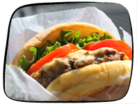

Everybody has those days when all you want to do is curl up in a blanket with some comfort food. If you can't get any at home, try one of these places:
Tater tots, grilled cheese, tomato soup, and milkshakes - what more could you want? Pick me!
Get some good ole southern food like biscuits and cheese grits. Don't forget to try a pickle. Pick me!
This is some real wholesome mac and cheese. There are a variety of flavors and they are served in cute little personal-sized pans. Also come in party sizes to go. Pick me!
Delicious grilled cheese creations, with home made soup and potato chips. The decor of this tiny restaurant is fun, and there's a tiny mouse door under the cashier's table. Pick me!
What better comfort food than a deliciously fatty burger and cheese fries? Top it off with a shake and you'll be feeling better in no time. Pick me!


Get warm, freshly-baked cookies delivered right to your door. If this isn't comforting, I don't know what is. Pick me!